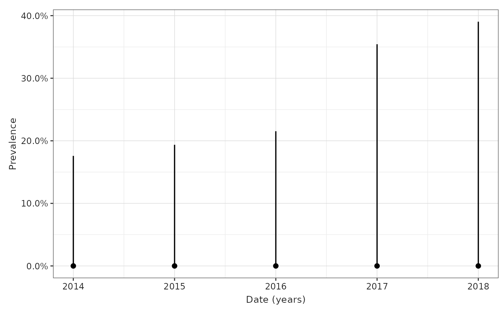

Plot prevalence results
plotPrevalence.RdPlot prevalence results
Arguments
- result
Prevalence results
- x
Variable to plot on x axis
- ylim
Limits for the Y axis
- ribbon
If TRUE, the plot will join points using a ribbon
- facet
Variables to use for facets
- colour
Variables to use for colours
- colour_name
Colour legend name
- options
a list of optional plot options
Examples
# \donttest{
cdm <- mockIncidencePrevalenceRef(sampleSize = 1000)
cdm <- generateDenominatorCohortSet(
cdm = cdm, name = "denominator",
cohortDateRange = c(as.Date("2014-01-01"), as.Date("2018-01-01"))
)
#> ℹ Creating denominator cohorts
#> ✔ Cohorts created in 0 min and 3 sec
prev <- estimatePointPrevalence(
cdm = cdm,
denominatorTable = "denominator",
outcomeTable = "outcome"
)
#> Getting prevalence for analysis 1 of 1
#> Time taken: 0 mins and 0 secs
plotPrevalence(prev)

# }